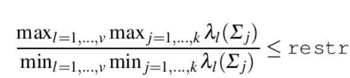

| Flexible Statistics Data Analysis Toolbox™ | |
restreigen restricts the eigenvalues according to the constraint specified in scalar restr. This function is called in every concentration step of function tclust and can also be used inside function MixSim to generate groups with shape restrictions
[out] = restreigen(eigenvalues, niini, restr)
[out] = restreigen(eigenvalues, niini, restr, tol, userepmat)
Suppose that the data at hand y1,...,yn in Rv come from a probability distribution with density ∑j=1kπjϕ(⋅,θj) with ϕ(⋅,θj) being the v-variate (generally multivariate normal) densities with parameters θj, j = 1,…,k. Generally θj = (μj,Σj) where μj is the population mean and Σj is the covariance matrix for component j. Let λl(Σj) be the l-th eigenvalue of covariance matrix of group j, (l = 1,…,v; j = 1,…,k) This routine imposes the constraint:

restreigen admits the following inputs
eigenvalues |
v x k matrix containing the eigenvalues of the covariance matrices of the k groups |
niini |
k x 1 vector containing the size of the k clusters |
restr |
scalar in the interval [1 ∞] which specifies the maximum ratio to allow between the largest eigenvalue and the smallest eigenvalue of the k covariance matrices which are generated. Setting restr to 1, yields the strongest restriction, forcing all eigenvalues/determinants to be equal and so the method looks for similarly scattered (respectively spherical) clusters. |
Optional parameters tol and userepmat are referred to tolerance and efficiency of calculations
tol |
scalar defining the tolerance of the procedure. The default value is 1e-8 |
userepmat |
scalar. If userepmat is true function repmat is used instead of bsxfun inside the procedure. Remark: repmat is built in from MATLAB 2013b so it is faster to use repmat if the current version of MATLAB is >2013a |
[out] = restreigen(eigenvalues, niini, restr) returns a v-by-k matrix containing restricted eigenvalues. The ratio between two possible elements in matrix out is not greater than restr.
Fritz H. Garcia-Escudero, L.A. and Mayo-Iscar, A. (2012), A fast algorithm for robust constrained clustering. Available at http://www.eio.uva.es/infor/personas/tclust_algorithm.pdf
Impose the constraint that the ratio between largest and smallest eigenvalue is not greater than 1.1
% Suppose v=3 and k=4 so the matrix containing the eigenvalues is 3-by-4
% First column of matrix eigenvalues contains the eigenvalues of the first group
% Second column of matrix eigenvalues contains the eigenvalues of the second group
% Thrid column of matrix eigenvalues contains the eigenvalues of the third group
% Fourth column of matrix eigenvalues contains the eigenvalues of the fourth group
rng(10,'twister')
eigenvalues=abs(10*randn(3,4));
% niini is the vector containing the sizes of the 4 groups
niini=[30;40;20;10];
out=restreigen(eigenvalues,niini,1.1)
disp('Input matrix of unrestricted eigenvalues')
disp(eigenvalues)
disp('Output matrix of restricted eigenvalues')
disp(out)
disp('Ratio between largest and smallest unrestricted eigenvalues')
disp(max(max(eigenvalues))/min(min(eigenvalues)))
disp('Ratio between largest and smallest restricted eigenvalues')
disp(max(max(out))/min(min(out)))
Input matrix of unrestricted eigenvalues
6.4581 11.1831 11.6942 7.3428
14.6513 0.0504 5.8652 6.9930
3.8523 2.5519 7.4491 20.0559
Output matrix of restricted eigenvalues
6.6693 7.3362 7.3362 7.3362
7.3362 6.6693 6.6693 6.9930
6.6693 6.6693 7.3362 7.3362
Ratio between largest and smallest unrestricted eigenvalues 397.8522
Ratio between largest and smallest restricted eigenvalues
1.1000
| |
resindexplot.html | rlga.html | |